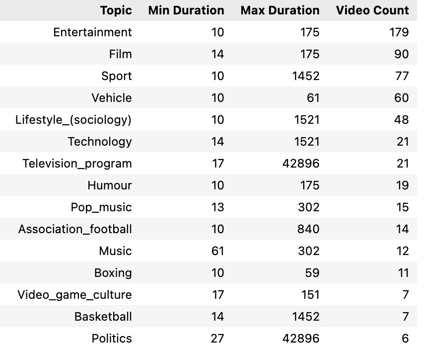

Final Report
Business-Oriented Projects
Executive Summary
This report investigates the key factors that influence the popularity of YouTube videos, providing actionable insights for content creators to optimize their strategies. By analyzing video metrics such as content topics, video duration, engagement rates, and audience behavior, the findings aim to help YouTubers refine their content strategies to increase view counts and, ultimately, maximize monetary rewards through higher audience engagement and ad revenue. The insights derived from this analysis can also assist marketers and advertisers in identifying effective promotional content.
Objective
The objective of this project is to identify and analyze the key drivers of YouTube video popularity, focusing on:
- Gathering and selecting useful variables related to YouTube videos.
- Investigating the correlations between video variables based on visualizations.
- Understanding how content topics, video duration, and other metrics influence engagement and popularity.
- Helping content creators and marketers optimize their strategies to enhance video performance and audience reach.
Key Insights
Short Videos Are Winning Audiences Over Long Videos

We classified popular videos with more than 6 million views and found that their views are concentrated in shorter durations (typically under 10 minutes). In contrast, less popular videos tend to vary widely in length.
Video Topics Are Highly Overlapped
Videos on trending topics in the entertainment and gaming categories tend to have higher engagement rates. This is a key finding derived from our clustering analysis.
Converting Audiences to Subscribers
View counts, like counts are highly correlated with each other. Subscribers, who actively choose to interact with video creators, are more likely to engage in behaviors such as liking, commenting, or saving videos. This suggests that fostering active audience engagement can help convert viewers into subscribers.
Key Features in YouTube Video Popularity
The three key features influencing YouTube video popularity are likeCount, duration, and topicCategories. LikeCount reflects audience engagement, duration represents the video’s length, and topicCategories capture the type of content, all contributing to what makes a video popular. 
Business Implications
Content Creators: Focus on aligning videos with trending topics, particularly in high-engagement categories like entertainment and gaming, to boost viewership. Additionally, actively encouraging likes and comments during videos can strengthen audience connections and foster long-term subscriber growth.
Advertisers: Target advertising efforts on high-engagement videos within popular categories to maximize visibility and ROI. Partnering with creators who consistently produce engaging content can amplify the reach and effectiveness of promotional campaigns.
Recommendations
- Content Creators:
Encourage Engagement: Include clear and consistent call-to-actions (CTAs) within videos, encouraging viewers to like, comment, and subscribe. For example, creators can verbally remind viewers to “hit the like button if you’re enjoying this content” at strategic points in the video.
Engaging Intros: Capture attention within the first 30 seconds by highlighting the video’s value and encouraging immediate engagement.
Incorporate Visual Prompts: Use on-screen graphics, animations, or pop-ups during the video to subtly remind viewers to engage without interrupting the flow of content.
Leveraging Trends: Videos that align with trending topics, especially in popular categories like entertainment and gaming, tend to attract higher audience engagement and view counts.
- Advertisers:
Collaborations with Engaged Creators: Partner with creators who actively foster audience interaction and have high like and comment rates.
Target High-Engagement Content: Focus ad placements on videos that incorporate engagement-driving strategies to ensure higher visibility and effectiveness.
Conclusion1
The analysis highlights the key factors influencing YouTube video popularity, including audience engagement (likes and comments), video duration, and alignment with trending topics. These findings emphasize the importance of producing concise, engaging content and leveraging popular categories like entertainment and gaming to maximize viewership and interaction. To capitalize on these insights, content creators should focus on fostering audience engagement through consistent call-to-actions and strategic content planning. Marketers and advertisers can enhance campaign effectiveness by collaborating with high-performing creators and targeting videos with proven engagement metrics. By addressing these opportunities, creators and advertisers can drive sustained audience growth, improve engagement, and achieve greater profitability.
Answering proposed research data science questions:
In our analysis, we initially classified YouTube videos into two categories based on social benchmarks and the median view count in our dataset: highly popular and low-popular videos, with the threshold set at 6 million views. The videos span a variety of topics, with some overlap in content. For instance, videos categorized as “entertainment” may also be labeled as “gaming” or “video games” at times. In the unsupervised learning section, we clustered the dimensionally reduced video data into groups using different models, including K-Means, DBSCAN, and Agglomerative Clustering. The clustering results suggest that videos can be categorized into distinct types, such as high-engagement content, niche topics, and viral videos, each reflecting specific audience behaviors. While K-Means and BIRCH identified around six clusters, Agglomerative Clustering uncovered more granular subcategories, and DBSCAN highlighted outliers, which may correspond to viral or exceptional videos. These findings provide valuable insights into how YouTube videos resonate with different audiences and the factors influencing video popularity.
In our analysis of video duration and popularity, we found that most highly popular videos tend to be relatively short, typically under 5000 seconds (less than one hour). Our investigation revealed that entertainment videos make up a large proportion of popular content, with their durations generally ranging from 0 to 30 minutes. When examining music videos, we observed significant variation in audience preferences based on music genre and the purpose of listening. For instance, long music videos are preferred as background noise for studying, while shorter music videos, such as those from Korean singer ROSÉ, attract a high level of engagement from viewers who enjoy short, focused content.
We found that the number of comments on a video is weakly correlated with view counts, like counts, and even video duration. This suggests that, while a video may be widely viewed or liked, audiences may not always feel inclined to comment. This reluctance could stem from concerns about revealing personal information or a preference for passively consuming content without engaging. However, platforms like YouTube and other video-sharing services commonly use metrics such as “Likes,” “Favorites,” and “Comments” as key indicators of interaction between creators and audiences. To benefit the video creators, our findings suggest that these platforms should consider incorporating additional variables to better evaluate the success of video content and refine their recommendation algorithms accordingly.
Advertisers should prioritize creators with high like counts, engaging entertainment-focused content, and shorter video durations. It is recommended to collaborate with viral creators on TikTok, as the platform’s content aligns well with these characteristics, ensuring maximum advertising effectiveness.
It is possible to predict the popularity trends of specific video categories to help creators gain a competitive advantage. Our analysis reveals that most viral videos are concentrated in categories such as entertainment and gaming, which consistently show high audience engagement and view counts. By monitoring real-time trends, keyword usage, and engagement patterns within these categories, creators can align their content with emerging topics and audience preferences. Leveraging predictive models and clustering analysis can further identify subcategories or niche trends, enabling creators to produce timely, relevant videos that capitalize on shifting viewer interests and maximize their reach.
The three key features influencing YouTube video popularity are likeCount, duration, and topicCategories, each providing critical insights for content success. LikeCount reflects audience engagement and satisfaction, with higher likes boosting visibility through YouTube’s recommendation algorithm, making it essential for creators to include clear call-to-actions (CTAs) encouraging likes. Duration, particularly shorter videos under 3 minutes, aligns with audience attention spans and performs well for entertainment or viral content, though longer videos can succeed in niches like tutorials or educational topics. Finally, topicCategories such as entertainment and gaming attract broader audiences and higher engagement, making them prime opportunities for creators to align content with trending topics and audience interests. By strategically leveraging these features—maximizing engagement, optimizing video length, and targeting popular content categories—creators can enhance visibility, audience retention, and overall video performance.1